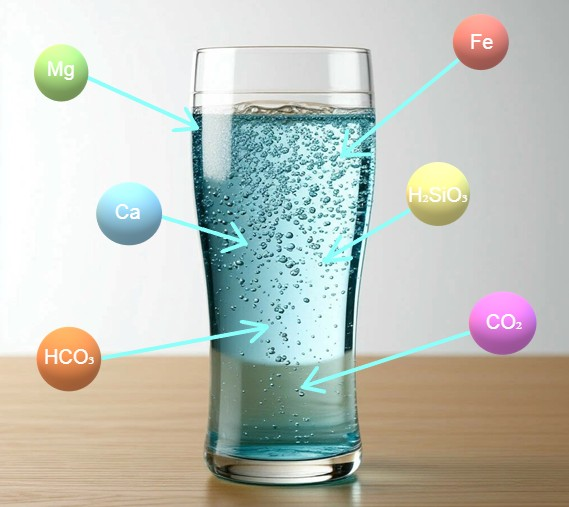
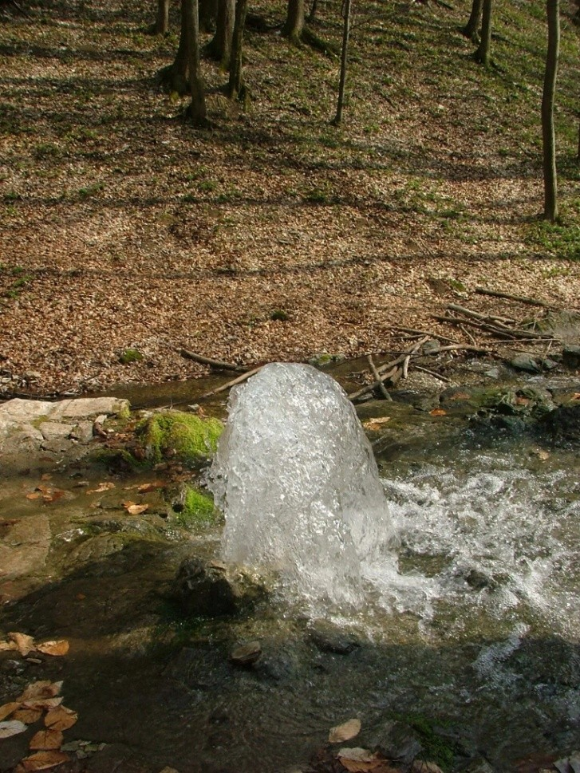
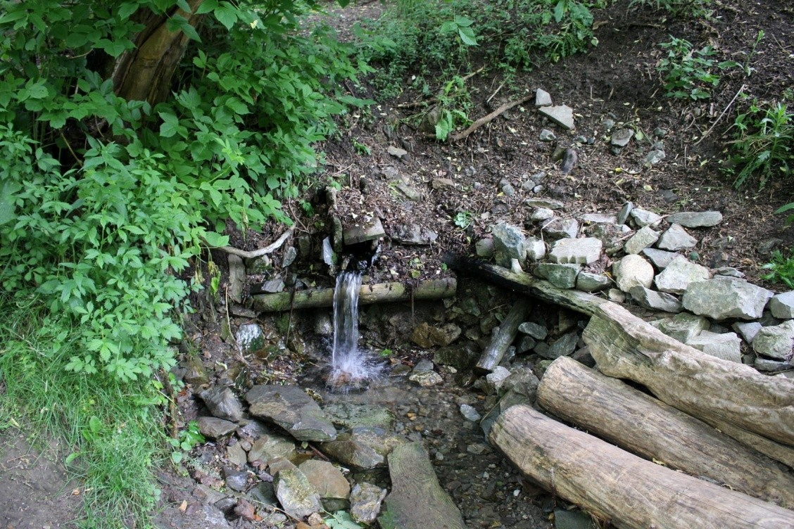
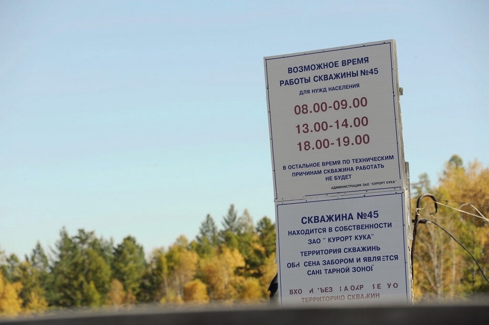

В воде его 50–250 мг/л. Поддерживает нервную и сердечно-сосудистую систему: помогает регулировать передачу нервных импульсов, снижает уровень стресса, участвует в расслаблении сердечной мышцы. Магний также улучшает работу почек (способствует выведению токсинов), положительно влияет на память и контроль над мышцами.
Содержание в Куке: 100–400 мг/л. Его основная роль — формирование и поддержание здоровья костей, зубов, волос. Кроме того, кальций участвует в регуляции некоторых иммунных реакций (поэтому иногда говорят о помощи при аллергии) и влияет на настроение — его дефицит связывают с повышенной тревожностью и симптомами депрессии.
Их в воде немало — 650–2700 мг/л. Они помогают нормализовать кислотно-щелочной баланс в организме. В контексте ЖКТ это особенно важно: гидрокарбонаты могут смягчать кислотность, облегчать изжогу и создавать более благоприятную среду для пищеварения.

В «Куке Курортной» его немного (не более 20 мг/л). В таких дозах железо не лечит анемию (для этого нужны специальные препараты), но поддерживает базовый уровень гемоглобина, участвуя в переносе кислорода.
Концентрация около 50–100 мг/л. Кремний важен для соединительной ткани: он способствует здоровью кожи, волос, ногтей, а также участвует в поддержании прочности сосудов и хрящей.
В этой воде её действительно много (до 3,6 г/л). Она усиливает диуретический (мочегонный) эффект, что при умеренном употреблении помогает выводить излишки жидкости и токсины. Также CO₂ улучшает кровообращение, в том числе в почках, что может быть полезно при некоторых функциональных нарушениях.
Первыми Куку нашли местные жители края - буряты и эвенки, существует легенда о том, как раненый олень привёл охотника к ручью. И зверь, и истощённый погоней человек испили воды — один исцелился от ран, а другой набрался сил. Охотник понял, какой клад открыл ему олень, и стал приносить воду больным соплеменникам.
Подобные сюжеты в фольклоре часто отражают реальный опыт: люди замечали целебные свойства и передавали знания из поколения в поколение.
Хотя народ знал о свойствах воды давно, первое научное описание появилось в 1852 году.

В преданиях встречаются истории об исцелениях воинов. Например, есть упоминания, что водой пользовались ещё воины Чингисхана.
Также бытует местная легенда, что целебную воду пробовал цесаревич Николай Александрович (будущий император Николай II) во время путешествия по Дальнему Востоку.

Воду берут из скважин Кукинского месторождения. Для розлива «Куки Курортной» используют скважину №45. Глубина — около 250 метров. На производстве стараются сохранить природный состав. Сначала воду закачивают в автоцистерны-термосы и везут на завод.
